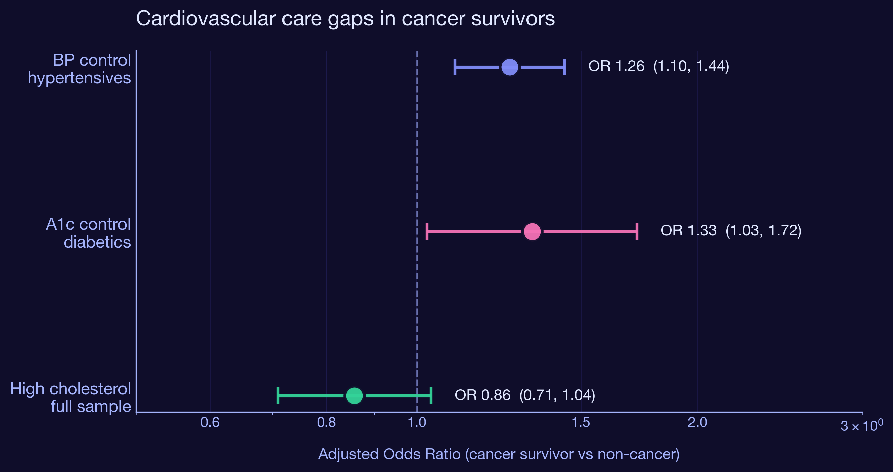
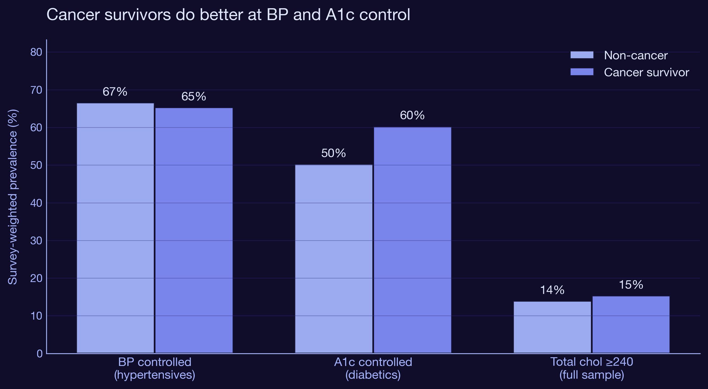
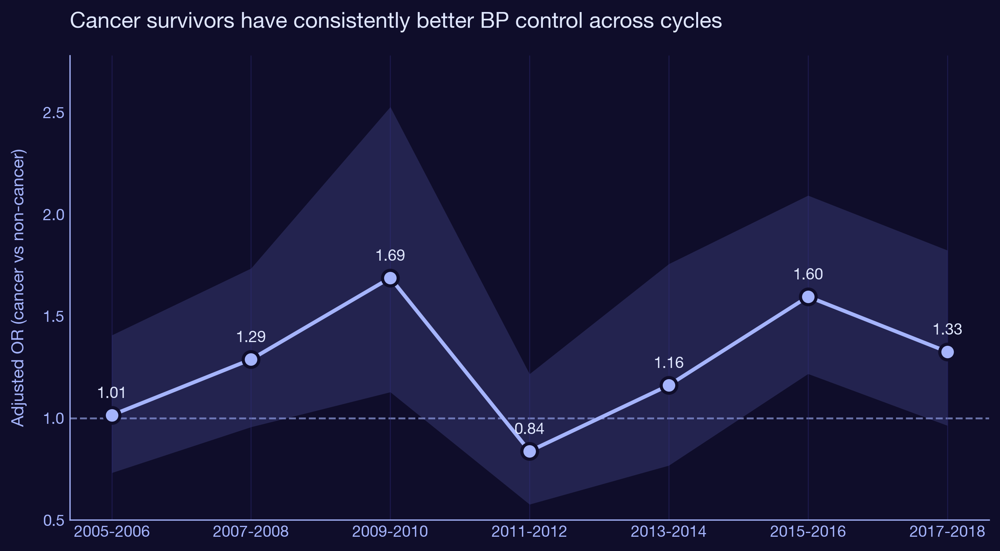

Are cancer survivors with hypertension and diabetes better or worse at managing cardiovascular risk? A population-based study using 20 years of NHANES data.
Cancer survivors live longer than they used to. Most of them don't die from their original cancer. They die from cardiovascular disease, diabetes complications, and the slow accumulation of chronic conditions that get pushed to the back of the queue while everyone is focused on the tumor. That framing leads to an obvious hypothesis: cancer survivors should have worse cardiovascular risk control than the general population. Their care is fragmented. Oncology doesn't run blood pressures. Primary care gets crowded out. We built this analysis to demonstrate the gap. The data refused to cooperate.
I extended the existing NHANES cardiometabolic cohort by adding three new domains: blood pressure exam (BPX), cholesterol labs (TCHOL, TRIGLY), and the PHQ-9 depression screener (DPQ). I then defined three cardiovascular outcomes and fit survey-weighted logistic regression models comparing cancer survivors to non-cancer adults, with cluster-robust standard errors approximating the NHANES Taylor-linearized design.
Among 11,772 US adults with hypertension across cycles 2005-2018, cancer survivors are significantly more likely to have their blood pressure under control. The fully adjusted odds ratio is 1.26 (95% CI 1.10 to 1.44, p = 0.001) after accounting for age, sex, race, smoking, obesity, and depression. The advantage holds across every individual cycle in the stratified analysis.

Among 5,194 US adults with diabetes, cancer survivors are 33% more likely to have HbA1c below 7.0% than non-cancer diabetics. OR 1.33 (95% CI 1.03 to 1.72, p = 0.031). The effect is larger but the confidence interval is wider because diabetics are a smaller subgroup. The leading explanation is the same as for BP control: more visits means more chances to titrate medications, refer to endocrinology, or escalate therapy.
| Outcome | Sample | OR | 95% CI | P |
|---|---|---|---|---|
| BP controlled | Hypertensives (n = 11,772) | 1.26 | 1.10 - 1.44 | 0.001 |
| A1c controlled | Diabetics (n = 5,194) | 1.33 | 1.03 - 1.72 | 0.031 |
| High cholesterol | Full sample (n = 32,110) | 0.86 | 0.71 - 1.04 | 0.111 |

We hypothesized that depressed cancer survivors would lose the advantage because depression is associated with worse self-management, missed appointments, and lower medication adherence. We were wrong, or the effect is smaller than this dataset can detect. None of the three cancer x depression interactions were statistically significant (all p > 0.09). The survivor advantage holds even when mental health comorbidity is layered in.
| Outcome | Cancer x depressed OR | 95% CI | P |
|---|---|---|---|
| BP controlled | 0.78 | 0.53 - 1.16 | 0.223 |
| A1c controlled | 0.62 | 0.35 - 1.09 | 0.097 |
| High cholesterol | 1.25 | 0.79 - 1.99 | 0.346 |

| Finding | Implication |
|---|---|
| Cancer survivors do better on BP control (OR 1.26) | The frequent-contact hypothesis is supported. Survivorship visits provide a spillover benefit for chronic disease management. |
| Cancer survivors do better on A1c control (OR 1.33) | Same mechanism. Diabetes management is touch-intensive and benefits from frequent clinical contact. |
| No advantage on high cholesterol (NS) | Cholesterol is a "set it and forget it" condition once a statin is prescribed. Visit frequency matters less for it. |
| Depression interaction not significant | The survivor advantage is robust to mental health comorbidity, at least in cross-section. |
| Effect likely tied to active follow-up | The advantage may shrink as survivors age out of structured surveillance. Worth following up in longitudinal data. |
Extended the existing NHANES cardiometabolic cohort by adding BPX (blood pressure exam, 30 new XPT files), TCHOL and TRIGLY (cholesterol labs), and DPQ (PHQ-9 depression screener). Outcomes derived from mean systolic and diastolic across up to 4 readings, HbA1c thresholds, and total cholesterol cut points. Survey-weighted logistic regression via statsmodels GLM with binomial family. Weights normalized so effective N matches actual N. Cluster-robust standard errors using combined SDMVSTRA x SDMVPSU as the cluster id, approximating the Taylor-series linearization that R's survey package uses. Each model adjusts for age, sex, race/ethnicity, smoking, obesity, and depression, with a cancer x depression interaction. Cycle-stratified models test temporal stability. All analysis is in two Python scripts and reruns in seconds.
Interested in survivorship care, real-world evidence, or population health strategy?
Get in touch